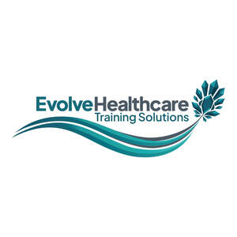

Trade Mark Journal No.2026/006 6 February 2026
UK00004327698 21 January 2026 (9,41,42)

- Class 9
- Downloadable course content and training materials; downloadable mobile application software and digital resources for education, training and professional development for healthcare and allied professionals including dental, medical, surgical and allied health disciplines; pre-recorded educational videos and multimedia content; downloadable electronic publications in the nature of e-books, articles, videos, lectures and other digital educational content for healthcare education and professional development; downloadable branded slide decks and presentation materials; downloadable assessment templates and clinical checklists; downloadable certificates and course completion badges.
- Class 41
- Development of educational materials and curricula; educational content publishing services; course design and development; creation of training manuals and educational content; educational testing and assessment services; professional certification programmes; competency evaluation services; skills assessment for healthcare professionals; training programmes for neurodivergent healthcare professionals; corporate training in healthcare settings; professional education and training services for healthcare professionals; provision of dental, medical, surgical and allied health educational workshops and courses; leadership development training in the field of healthcare and education; interprofessional collaboration and interprofessional education training; bespoke healthcare education and professional development programmes; delivery of in-person, virtual and hybrid courses and events; organisation and facilitation of simulation-based, case-based medical, surgical and theoretical training; provision of an online learning portal featuring recorded lectures, learning modules, downloadable resources and discussion forums; non-downloadable electronic publications in the nature of e-books, videos, lectures and other educational materials for healthcare education and professional development; CPD (continuous professional development) courses and content for dentists, doctors, nurses and allied healthcare professionals; distance learning courses for healthcare and allied professionals; provision of healthcare mentorship and coaching programmes to support career development in health and social care; provision of practical and theoretical skill development training in medical and surgical techniques for healthcare professionals within simulated, clinical, virtual or classroom environments; interdisciplinary medical-dental education and collaboration; educational coaching and tutoring services; mentorship programmes for healthcare professionals; teaching healthcare and allied professionals to deliver educational courses; instructor certification programmes; provision of branded educational events and conferences; delivery of accredited and non-accredited training programmes under a common brand; issuing of branded educational certificates.
- Class 42
- Scientific and technological services relating to medical education and healthcare professional training; development of learning management systems (LMS); creating, developing and providing online digital learning platforms and portals for healthcare and allied education, including the creation and maintenance of educational software and databases; digital learning strategy development; technical support for digital training tools; maintenance of online learning systems; design and visual branding of digital learning environments; user interface and user experience design for educational platforms; consultancy, information and advisory services relating to the aforesaid services.
EVOLVE HEALTHCARE TRAINING SOLUTIONS LTD